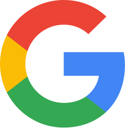

Hakkımda
Veriyi önce güvenilir, sonra kullanışlı yaparım.
8 yılı aşkın süredir fintech, perakende, mobilite ve ajans tarafında çalışıyorum. İşim, bir kullanıcının ilk tıklamasından satın almasına kadar her adımın doğru ölçülmesi ve bu verinin pazarlama, ürün ve yönetim için aynı dili konuşması. Rakamlar tutmadığında beni ararlar; genelde sorun iki aracın arasındadır.
ŞU AN
Marketing Data Analytics Manager
Kripto varlık alım-satım platformu · İstanbul · Türkiye pazarı
8+
yıl web & app analitiği
15+
MMP, analitik ve BI aracı
12
şirket ve marka
8
ajansta aynı anda yönettiğim müşteri hesabı
Hizmet kapsamı
İlk event'ten son dashboard'a kadar.
Tek bir parçayı ya da altyapının tamamını üstlenebilirim. En sık çalıştığım alanlar:
Seçili işler
Bir veri problemine nasıl yaklaşıyorum?
Kurum içi işler, ajans projeleri ve analitik case çalışmalarından. Müşteri verisi ve rakamlar çıkarıldı; görünen şey yöntem.
Kartlara tıklayarak vakanın tamamını açabilirsiniz.
Dashboard'lar & otomasyonlar
Kurduğum raporlar, kontroller ve alarmlar.
Freelance ve ajans projelerimden örnekler. Rakamlar ve müşteri adları bulanıklaştırıldı; görmeniz gereken yapı ve kurgu.
Tüm ekran görüntülerinde gerçek rakamlar ve marka bilgileri gizlendi.
Deneyim
Çalıştığım şirketler.
Detayları görmek için bir satıra tıklayın.
Markalar
Hizmet verdiğim markalar.
Kurum içi rollerim ve ajans döneminde teknik muhatabı olduğum hesaplar. Rolümü görmek için üzerine gelin.
Araç seti
Her gün içinde olduğum araçlar.
Sertifikalar
- Google Analytics Individual Qualification

- Google Ads – Measurement
- Google Ads – Search
- Google Ads – Display
- Python (1+1+1)
Rakamlar tutmuyor mu?
Neyi ölçtüğünüzü ve nerede bozulduğunu anlatın. Tracking denetimi, MMP kurulumu, dashboard ya da uçtan uca analitik yol haritası; birlikte bakalım.
fkarakutuk17@gmail.com